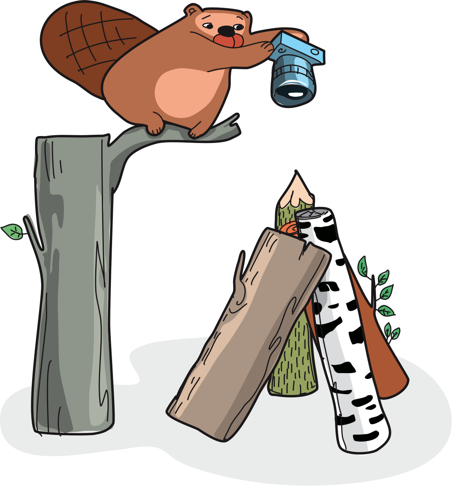
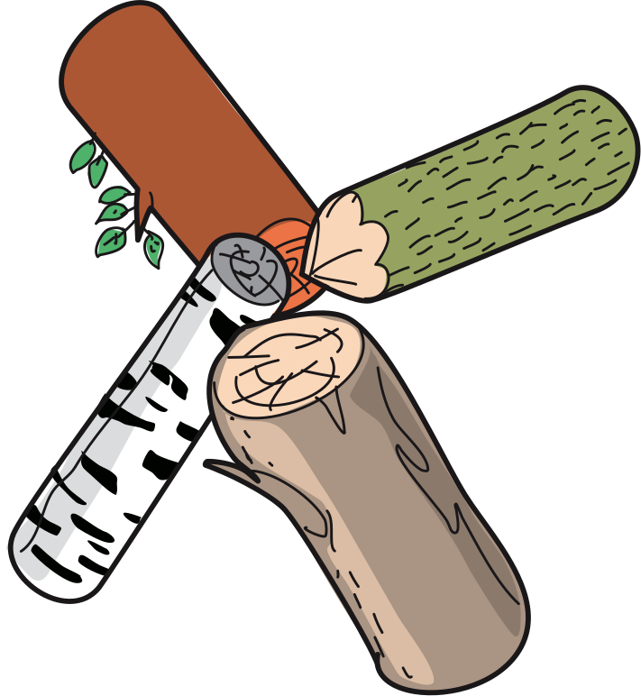
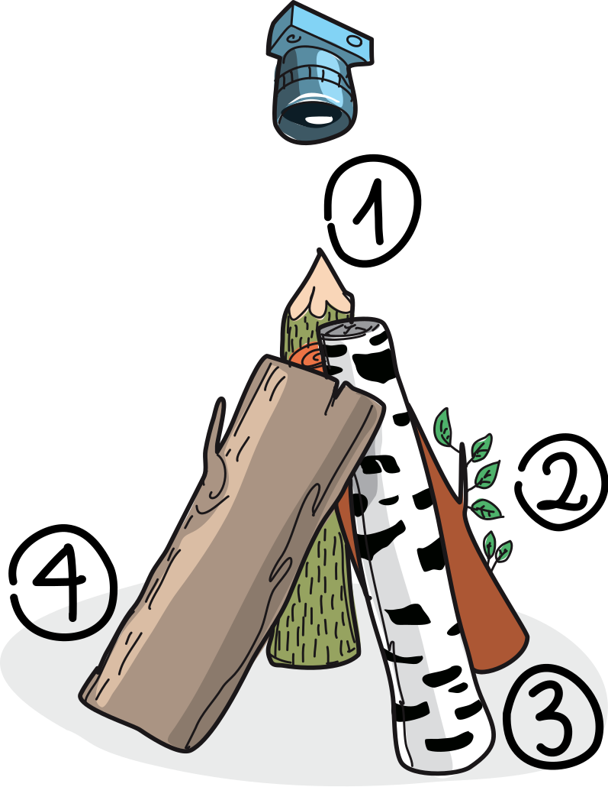
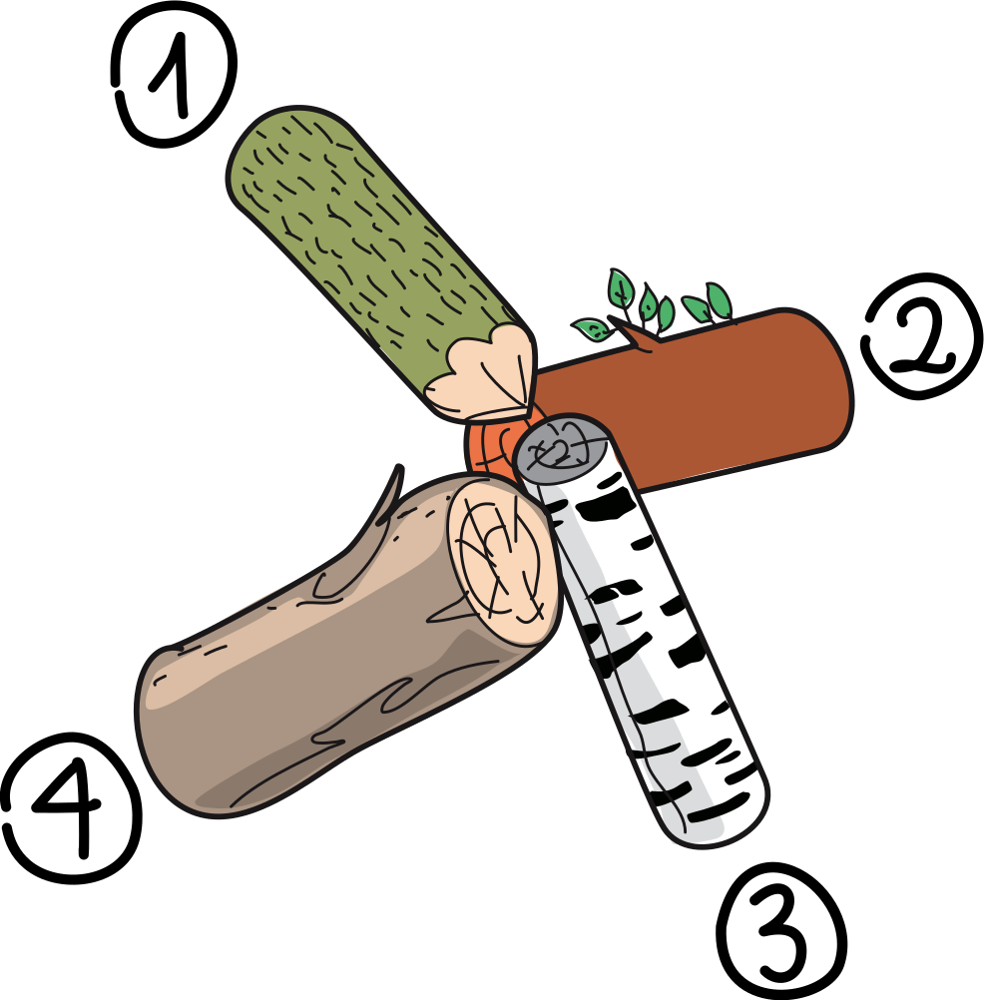
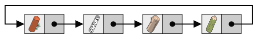

Body

Le castor vient de prendre une photo.
Question/Challenge - for the brochures
Laquelle des quatre photos a-t-il prise?
Question/Challenge - for the online challenge
Laquelle des quatre photos a-t-il prise?
Answer Options/Interactivity Description
|  | |||
| A) | B) | C) | D) |
Answer Explanation
La bonne réponse est D).
Les troncs que le castor a photographiés sont arrangés en rond. Pour trouver quelle photo est la bonne, nous considérons l’ordre des troncs dans cet arrangemet. Nous choisissons un tronc (par exemple le tronc pointu) et lui donnons le numéro 1. Nous regardons ensuite quel tronc se trouve à sa droite et lui donnons le numéro 2. Nous continuons ainsi jusqu’à ce que chaque tronc ait un numéro. Dans la situation photographiée par le castor, les troncs sont arrangés dans l’ordre 1 – tronc pointu, 2 – tronc brun avec des feuilles, 3 – tronc de bouleau, 4 – gros tronc brunc.

Nous regardons maintenant l’ordre des troncs sur les photos A à D. Comme plus haut, nous commençons par le tronc pointu numéro 1 et allons vers la droite, dans le sens des aiguilles d’une montre:
Seule la photo D montre les troncs dans le bon ordre.

This is Informatics
Dans cet exercice du Castor, nous considérons l’ordre des troncs. Ce qui est visible à l’œil nu avec peu d’éléments (ici quatre troncs) nécessite une méthode automatisée pour les problèmes ayant beaucoup d’éléments. Un programme devant traiter des éléments voisins peut utiliser une structure de données adaptée pour stocker les éléments, comme une liste chaînée:

Dans une liste chaînée, chaque élément est stocké dans une cellule différente. En plus, un pointeur vers la cellules suivante est aussi stocké dans chaque cellule. Si la dernière cellule contient un pointeur vers la première cellule, il s’agit d’une structure de données cyclique. C’est important dans notre exemple pour pouvoir commencer par n’importe quel tronc tout en parcourant la liste entière.
This is Computational Thinking
Optional - not to be filled 2023